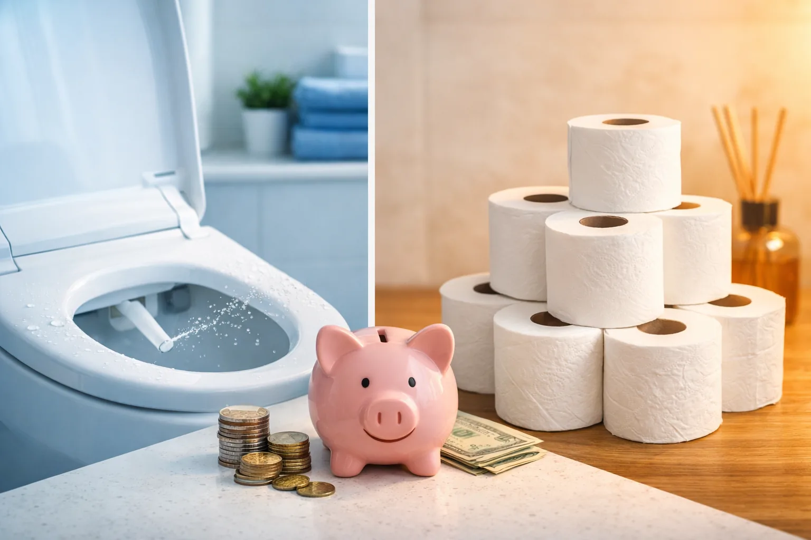
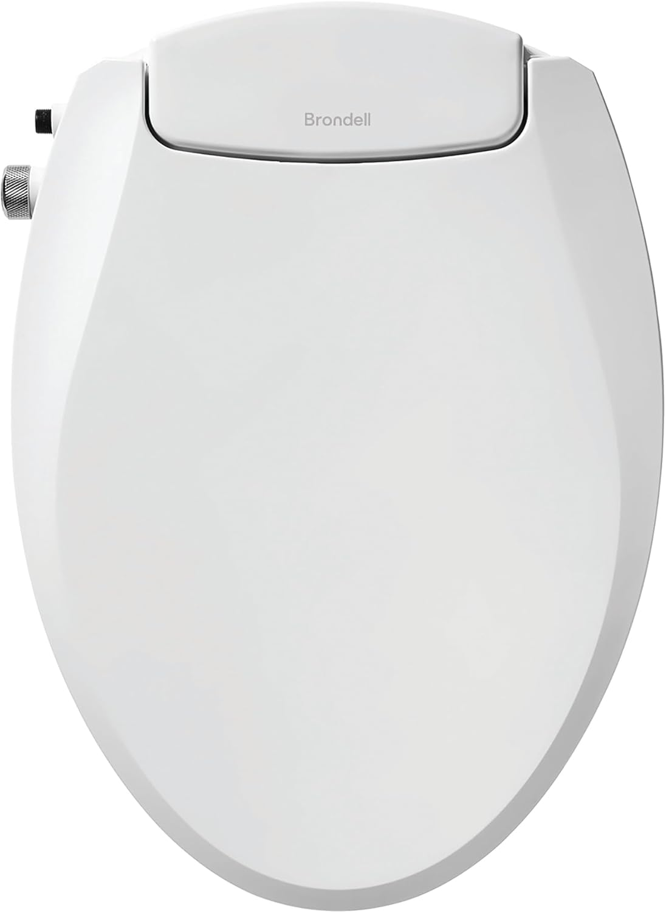
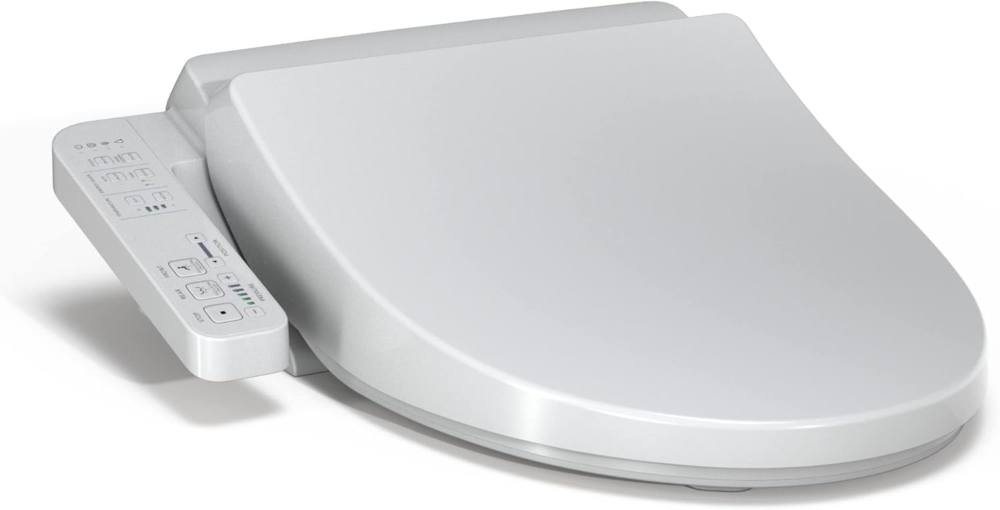
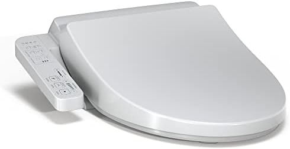

Bidet vs Toilet Paper: Real Cost Savings Breakdown (2026)

Home & Bath Product Researcher

Quick Answer
The average American household spends $182-$480 per year on toilet paper. A bidet attachment costs as little as $24 and reduces toilet paper usage by 75-90%. Most families recoup their bidet investment within 1-6 months and save $150-$400 annually after that.
Americans spend more on toilet paper than any other country in the world. According to Statista, U.S. consumers purchased over $12 billion worth of toilet paper in 2025 alone. That translates to roughly $182 per household at the low end, and well over $400 for families who prefer premium brands. Meanwhile, a simple bidet toilet seat can slash that expense by up to 90% starting from its very first month of use.
We did the math on five different bidet models across every price range. Whether you're considering a simple attachment you can install in 15 minutes or a full-featured electronic seat, this guide breaks down exactly how much you'll spend, how much you'll save, and when each model pays for itself.

SAMODRA Non-Electric Bidet Attachment
Pays for itself in under 1 month for a family of four. Zero electricity, zero maintenance. The fastest ROI of any bidet on the market.
Check Price on Amazon

Table of Contents
The Real Cost of Toilet Paper in 2026
Before we can calculate bidet savings, we need to understand what toilet paper actually costs. The numbers might surprise you. According to the Bureau of Labor Statistics and our own price tracking, here's what American households spend:
Average Annual Toilet Paper Spending
- Single person: $50-$80/year (50-60 rolls)
- Couple: $100-$160/year (100-120 rolls)
- Family of 4: $182-$480/year (200-350 rolls)
- Premium brand users: Add 40-60% more
The average American uses 140 rolls of toilet paper per year, more than double the global average. At current 2026 prices, standard rolls cost $0.75-$1.00 each, while premium brands like Charmin Ultra Soft run $1.20-$1.50 per mega roll equivalent. These costs have risen steadily: toilet paper prices increased 27% between 2020 and 2025.
And those numbers don't include the hidden costs. Plumbing repairs from excessive paper use average $200-$400 per incident. Septic system owners spend an additional $50-$100 per year on treatment chemicals partly because of toilet paper buildup.
What a Bidet Actually Costs to Own
Bidet costs fall into three categories: purchase price, installation, and ongoing operating costs. Here's the complete breakdown by type:
Non-Electric Bidet Attachments ($20-$90)
These bolt onto your existing toilet seat and connect to the water supply line. Installation takes 10-20 minutes with no tools beyond an adjustable wrench. Operating costs are essentially zero: they use water pressure alone, and the additional water per use is about 1/8 gallon.
- Purchase: $20-$90 one-time
- Installation: DIY, no plumber needed
- Water cost: $1-$3/year additional
- Electricity: $0 (no power required)
- Maintenance: $0 (occasional wipe-down)
- Total year 1 cost: $21-$93
Electric Bidet Seats ($170-$700+)
These replace your entire toilet seat and offer heated water, warm air drying, heated seats, and adjustable pressure. They require a nearby GROUNDED outlet (GFCI recommended). If you need an electrician to add an outlet, budget $150-$300 for that one-time cost.
- Purchase: $170-$700+
- Installation: DIY seat swap + outlet ($0-$300)
- Water cost: $1-$3/year
- Electricity: $24-$60/year (heated features)
- Maintenance: $0-$20/year (filter replacement on some models)
- Total year 1 cost: $195-$1,083
Year-by-Year Savings Analysis
We calculated the total cost of ownership for each bidet type versus continued toilet paper use over 5 years. The results are clear: every bidet pays for itself, and the savings compound year after year.
Scenario 1: Single Person ($65/year TP spend)
A single person using standard toilet paper spends about $65/year. With a $24 bidet attachment reducing usage by 80%, you save $52/year after the first year. The attachment pays for itself in about 5 months. Over 5 years, total savings: $232.
Scenario 2: Couple ($130/year TP spend)
Two adults using toilet paper spend roughly $130/year. A non-electric bidet seat ($90) reduces this to about $26/year. After the first year, you save $104 annually. Break-even: 11 months. 5-year savings: $430.
Scenario 3: Family of 4 ($300/year TP spend)
A family of four buying mid-range toilet paper spends approximately $300/year. Even with a $219 electric bidet (the TOTO A2), toilet paper drops to $60/year and electricity adds $36/year. Net annual savings after year 1: $204/year. Break-even: 13 months. 5-year savings: $797.
Scenario 4: Premium TP Family ($480/year spend)
Families who buy premium brands like Charmin Ultra or Cottonelle spend $480+/year. Switching to even a premium $699 bidet with air-dry (eliminating TP almost entirely) saves $420/year after electricity. Break-even: 20 months. 5-year savings: $1,381.
Best Bidets by Budget & Savings
We selected these four models specifically for their cost-effectiveness. Each one represents the best savings potential in its price tier, and all are available through our full bidet reviews.
SAMODRA Non-Electric Bidet Attachment
- Dual retractable nozzles (front and rear wash)
- Adjustable water pressure control
- Self-cleaning nozzle function
- 15-minute DIY installation, no tools required
- Fits 95% of standard toilets
Pros
- Unbeatable price-to-savings ratio
- Zero operating costs
- 25,000+ verified positive reviews
Cons
- Cold water only (no heating)
- No air dry feature
Cost savings: Pays for itself in under 1 month for a family of 4. Annual savings after year 1: $237 (assuming $300/yr TP baseline, 80% reduction).
Check Price on Amazon
Brondell Swash Ecoseat Non-Electric Bidet
- Full toilet seat replacement (not just an attachment)
- Dual stainless steel nozzles
- Adjustable spray width and pressure
- Slow-close lid included
- No electricity required
Pros
- Trusted brand (Brondell) with strong warranty
- Zero electricity cost forever
- More comfortable than attachment-style
Cons
- Cold water only
- Higher upfront cost than attachments
Cost savings: Break-even in 4 months for a family of 4. Annual savings after year 1: $237. Total 5-year savings: $1,095.
Check Price on Amazon


TOTO WASHLET A2 Electronic Bidet Toilet Seat
- EWATER+ self-cleaning technology
- Heated seat with adjustable temperature
- Warm water wash with pressure control
- SoftClose lid
- TOTO brand reliability and warranty
Pros
- TOTO quality at entry-level electric price
- Heated water year-round comfort
- Low electricity consumption ($3/month)
Cons
- Requires GFCI outlet nearby
- No air dry (still need some TP)
Cost savings: Break-even in 13 months for a family of 4. Annual savings after year 1: $204. Total 5-year savings: $797.
Check Price on Amazon


Bio Bidet BB2000 Bliss Electric Bidet Seat
- Warm air dryer eliminates TP need
- Heated seat with 3 temperature settings
- Oscillating and pulsating wash modes
- Wireless remote control
- Energy-saving mode reduces standby power
Pros
- Air dry = near-zero toilet paper use
- Highest comfort and hygiene level
- Deodorizer keeps bathroom fresh
Cons
- Highest upfront investment
- Higher electricity use ($5/month)
Cost savings: Break-even in 20 months for premium TP families ($480/yr). Annual savings after year 1: $420. Total 5-year savings: $1,381. For a family of 4 on standard TP, break-even takes 30 months but still saves $531 over 5 years.
Check Price on Amazon

Cost Comparison Table
Here's a side-by-side comparison of all four recommended bidets, with cost analysis based on a family of four spending $300/year on standard toilet paper:
| Model | Price | Annual Operating Cost | Break-Even | 5-Year Savings | Rating |
|---|---|---|---|---|---|
| SAMODRA Attachment | $23.99 | $2/yr (water only) | 1 month | $1,143 | ⭐ 4.4 |
| Brondell Ecoseat | $89.99 | $2/yr (water only) | 4 months | $1,095 | ⭐ 4.3 |
| TOTO WASHLET A2 | $219.00 | $38/yr (water + electric) | 13 months | $797 | ⭐ 4.6 |
| Bio Bidet BB2000 | $699.00 | $62/yr (water + electric) | 30 months | $531 | ⭐ 4.5 |
How to Choose Based on Your Budget
If You Want the Fastest Payback
Go with a non-electric attachment like the SAMODRA ($24). It pays for itself in weeks, not months. The trade-off is cold water only, which is perfectly comfortable in warm climates but less pleasant in winter. If you're renting or just want to test the bidet lifestyle, this is the risk-free starting point.
If You Want Comfort Without Electricity Costs
The Brondell Ecoseat ($90) gives you a proper slow-close seat with integrated bidet, all running on water pressure alone. No outlet needed, no electricity bill increase. It's the sweet spot between budget and comfort. Check our toilet seat replacement guide for installation tips.
If You Want Heated Water and Maximum Comfort
The TOTO WASHLET A2 ($219) delivers the heated water experience at the lowest price point from a premium brand. You'll need a GFCI outlet within reach of your toilet. The small electricity cost ($3/month) is dwarfed by your toilet paper savings. See our complete bidet toilet seat reviews for more options in this range.
If You Want to Eliminate Toilet Paper Entirely
Only bidets with warm air dryers can truly replace toilet paper. The Bio Bidet BB2000 ($699) is the most cost-effective in this category. While the upfront cost is high, families spending $400+/year on premium toilet paper will still save significantly over 5 years.
Before You Buy: Quick Checklist
- Measure your toilet (elongated vs round) before ordering
- Check if you have a GFCI outlet near the toilet (for electric models)
- Calculate your current monthly toilet paper spending
- Consider your household size (bigger family = faster payback)
- Check your water heater proximity (affects warm water models)
- Read our installation guide to see if DIY is right for you
Frequently Asked Questions
How much does a bidet save per year vs toilet paper?
Most households save between $150 and $400 per year after the first year. A family of four spending $30-50/month on toilet paper will see the biggest savings. Even with electricity costs for heated models, the annual savings are significant. A budget $24 attachment saves nearly as much per year as a $700 premium model because both reduce paper usage by similar percentages.
How long does it take for a bidet to pay for itself?
A budget bidet attachment ($24-90) pays for itself in 1-3 months. A mid-range electric bidet ($200-300) breaks even in 6-12 months. Premium models ($500+) typically pay for themselves within 18-24 months. The key variable is your current toilet paper spending: premium brand users see the fastest ROI regardless of bidet price.
Does a bidet use a lot of water?
No. A typical bidet uses about 1/8 gallon (0.5 liters) per use. That adds roughly $1-3 per year to your water bill. For context, manufacturing a single roll of toilet paper requires 37 gallons of water. So switching to a bidet actually reduces your total water footprint dramatically.
Do electric bidets increase your electricity bill?
Electric bidets with heated seats and warm water typically add $2-5 per month to your electricity bill ($24-60/year). Non-electric models have zero electricity cost. Even with electricity factored in, the savings from eliminated toilet paper far exceed the added energy cost. Models with eco-mode or instant-heating use less power than tank-style heaters.
Do you still need toilet paper with a bidet?
Most bidet users reduce toilet paper consumption by 75-90%. Bidets with warm air dryers can eliminate the need almost entirely. Without an air dryer, most people use a few sheets to pat dry. Budget for about 1 roll per person per month instead of the average 4-5 rolls. Some users switch to reusable cloth towels for drying, eliminating paper costs completely.
Is a bidet worth it for a single person?
Yes. A single person typically spends $50-$80/year on toilet paper. A $24 bidet attachment pays for itself in under 6 months and saves $40-65 every year after that. Over 5 years, even a single person saves $200-$300. The comfort and hygiene benefits are a bonus on top of the financial savings.
Final Verdict: Is a Bidet Worth the Investment?
The math is clear: every bidet on this list pays for itself, and most do so within the first year. The question isn't whether a bidet saves money. It's which one matches your budget and comfort preferences.
For the fastest return on investment, the SAMODRA attachment at $24 is unbeatable. It pays for itself faster than a Netflix subscription and delivers savings every month after that.
For the best balance of comfort and savings, the TOTO WASHLET A2 at $219 gives you heated water, a heated seat, and TOTO reliability while still breaking even within a year for most families.
For maximum long-term savings and the goal of eliminating toilet paper entirely, the Bio Bidet BB2000's air dryer makes it possible. Families spending $400+/year on premium toilet paper will save over $1,300 in five years.
Whichever you choose, the investment pays off. The average American household will save between $750 and $2,000 over five years by switching from toilet paper to a bidet. That's money back in your pocket every single month.